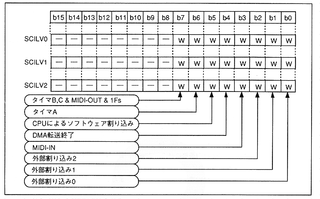

Return to previous page ｜ Return to menu ｜ Go to next page
- Figure 4.65 Interrupt Level Setting Register Format

- SCILV0 [7: 0] (W); Sound-Cpu Interrupt LeVel bit0
- Specifies bit 0 of the interrupt level code to the sound CPU defined with bit support.
- SCILV1 [7: 0] (W); Sound-Cpu Interrupt LeVel bit1
- Specifies bit 1 of the interrupt level code to the sound CPU defined with bit support.
- SCILV2 [7: 0] (W); Sound-Cpu Interrupt LeVel bit2
- Specifies bit 2 of the interrupt level code to the sound CPU defined with bit support.
Return to previous page ｜ Return to menu ｜ Go to next page